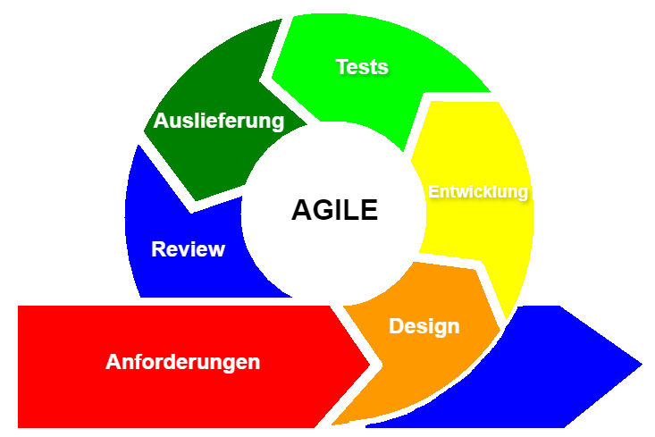

Agiles Projektmanagement verfolgt einen iterativen Ansatz, da es ein Projekt in einzelne Abschnitte unterteilt, in kurzen Zeitabschnitten, den so genannten Sprints, bearbeitet und dann den Prozess so lange wiederholt, bis das Projekt abgeschlossen ist und alle Ergebnisse fertiggestellt sind.
| Definition |
Die Fähigkeit, sich schnell an neue Anforderungen anzupassen |
| Ziel |
Anpassungsfähigkeit erhöhen, um auf Veränderungen zu reagieren |
| Prinzipien |
Kontinuierliche Zusammenarbeit, Verbesserung und Iteration |
| Methoden |
Scrum, Kanban, Lean, Extreme Programming (XP), DevOps, Design Thinking, Feature Driven Development |
| Vorteile |
Schnelle Reaktionsfähigkeit, Kundenzentrierung, Innovation |

Zentrale Eigenschaften
User Stories
Im agilen Projektmanagement werden Arbeitsanforderungen oft als User Stories stilisiert. Dies liegt daran, dass sich die agile Methode auf die Kundenperspektive konzentriert. Diese User Stories beschreiben, welche Arbeit ein Kunde erledigen möchte und warum. Sie müssen nicht lang sein, nur so lang, dass sie alle wesentlichen Informationen enthalten, die agile Teams benötigen, um den Arbeitsaufwand zu schätzen.
Sprints
Sprint ist nur ein schickes Wort für einen Zeitraum. Agile Teams arbeiten in Iterationen von 1-4 Wochen, die als Sprints bezeichnet werden. Jeder Sprint basiert auf einer bestimmten Aufgabe oder einem bestimmten Ziel. Die Idee ist also, dass Sie in kurzen Iterationen, sogenannten Sprints, arbeiten, bis Sie Ihr Projekt abgeschlossen haben. Dann beginnen Sie den Prozess von vorne.
Tägliche Besprechungen
Kommunikation ist das A und O, wenn es um agile Werte geht. Kurze Besprechungen sollten jeden Tag stattfinden und die Teammitglieder sollten in ständigem Austausch miteinander stehen. Diese Besprechungen müssen nicht lange dauern, sollten aber abdecken, woran die Leute gerade arbeiten, und alle auf den neuesten Stand bringen.
4 Kernwerte
- Individuen und Interaktionen über Prozesse und Werkzeuge
- Funktionierende Software über umfassende Dokumentation
- Kundenzusammenarbeit über Vertragsverhandlungen
- Auf Veränderungen reagieren, anstatt einem Plan zu folgen
12 Prinzipien
- Customer satisfaction by early and continuous delivery of valuable software.
Kundenzufriedenheit durch frühzeitige und kontinuierliche Lieferung von wertvoller Software.
- Welcome changing requirements, even in late development.
Berücksichtigung sich ändernder Anforderungen, auch in der Spätphase der Entwicklung.
- Deliver working software frequently (weeks rather than months).
Häufig funktionierende Software liefern (eher Wochen als Monate).
- Close, daily cooperation between business people and developers.
Enge, tägliche Zusammenarbeit zwischen Geschäftsleuten und Entwicklern.
- Projects are built around motivated individuals, who should be trusted.
Projekte werden um motivierte Personen herum aufgebaut, denen man vertrauen sollte.
- Face-to-face conversation is the best form of communication (co-location).
Gespräche von Angesicht zu Angesicht sind die beste Form der Kommunikation (Co-Location).
- Working software is the primary measure of progress.
Funktionierende Software ist der wichtigste Maßstab für den Fortschritt.
- Sustainable development, able to maintain a constant pace.
Nachhaltige Entwicklung, die in der Lage ist, ein konstantes Tempo zu halten.
- Continuous attention to technical excellence and good design.
Kontinuierliche Aufmerksamkeit für technische Spitzenleistungen und gutes Design.
- Simplicity—the art of maximizing the amount of work not done—is essential.
Einfachheit - die Kunst, die Menge der nicht erledigten Arbeit zu maximieren - ist wesentlich.
- Best architectures, requirements, and designs emerge from self-organizing teams.
Die besten Architekturen, Anforderungen und Entwürfe entstehen in selbstorganisierenden Teams.
- Regularly, the team reflects on how to become more effective, and adjusts accordingly.
Das Team reflektiert regelmäßig, wie es effektiver werden kann, und passt sich entsprechend an.